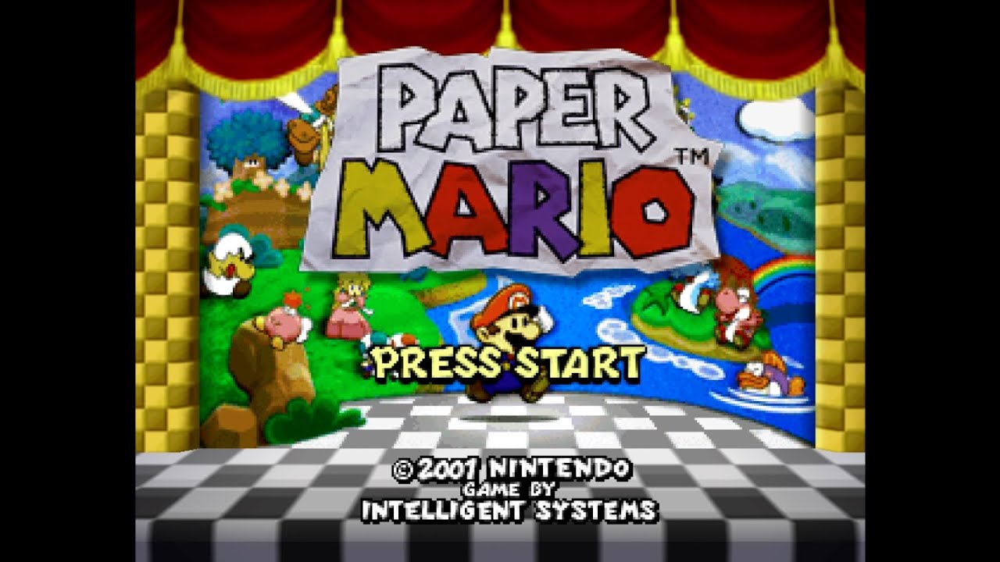

Paper Mario?
Most everyone and their kid brother know who Mario is. What most people don't know of however is his foray into the paper world! On August 11, 2001, Intelligent Systems released a quaint little RPG onto the Nintendo 64. In this game you play as the Mario everyone is familiar with. Instead of running from left to right and grabbing flagpoles however, you embark on an epic adventure across the Mushroom Kingdom meeting a huge cast of characters! So why PAPER Mario? To be honest being paper has very little to do with how the game plays or even the actual plot! It's mainly just used for a throwaway gag here or there referencing them all being paper. However the art style serves to give this game a very distinct and memorable look even over twenty years after its release. 